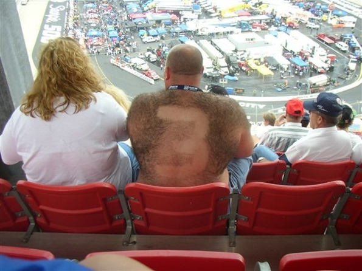

Hairy Backs
I'm not a very hairy guy. Despite having hairy arms and legs, it doesn't go much further. Hairy backs are an interesting thing. They don't seem to follow any real pattern in heredity. I'm not upset because people have hairy backs. They can't do anything about it (except wax it, use Nair, or go crazy with duct tape or the tweezers). That's not the point. The rest of us don't really care to look at what you've got back there. Let's talk about the details here.
I went to an amusement park this weekend. Almost the entire day I came across the same guy in a wheel chair. The guy was wearing a tank top, some sun glasses, and he had a beautiful mullet. The problem was that his back was hairy enough to be confused with a carpet. I'm not sure how many people have seen the picture of the guy with the number shaved in his back while he attends some sort of race: Same 'ol thing applies here - that's gross.
Again, it's not that I blame you for having a hairy back. But let's try to limit the exposure that the rest of us need to endure. Want to go swimming? About to take a shower? Going to the beach? Changing your shirt? I can understand each of those things.
If you're going to continue to expose your hairy back, consider doing some of the following:
- Braiding it
- Corn Rows
- Cool shaved patterns
- Dying it
- Shampoo and Conditioner
- Pig tails
Those of us that don't have hairy backs, and aren't regularly exposed to them can only stand to look at it for so long. Some of you hairy back people might say, "Well don't look at it." I would say that our eyes are drawn to your hairy backs in the same way that they are to the elephant man at the circus - "whoa... check THAT out." If you choose to continue to walk around like that, don't be surprised if you get attacked with a bottle of Nair or some duct tape.
Update: Inserted image, since the previous link was leading to something horrendous and incorrect. My apologies.